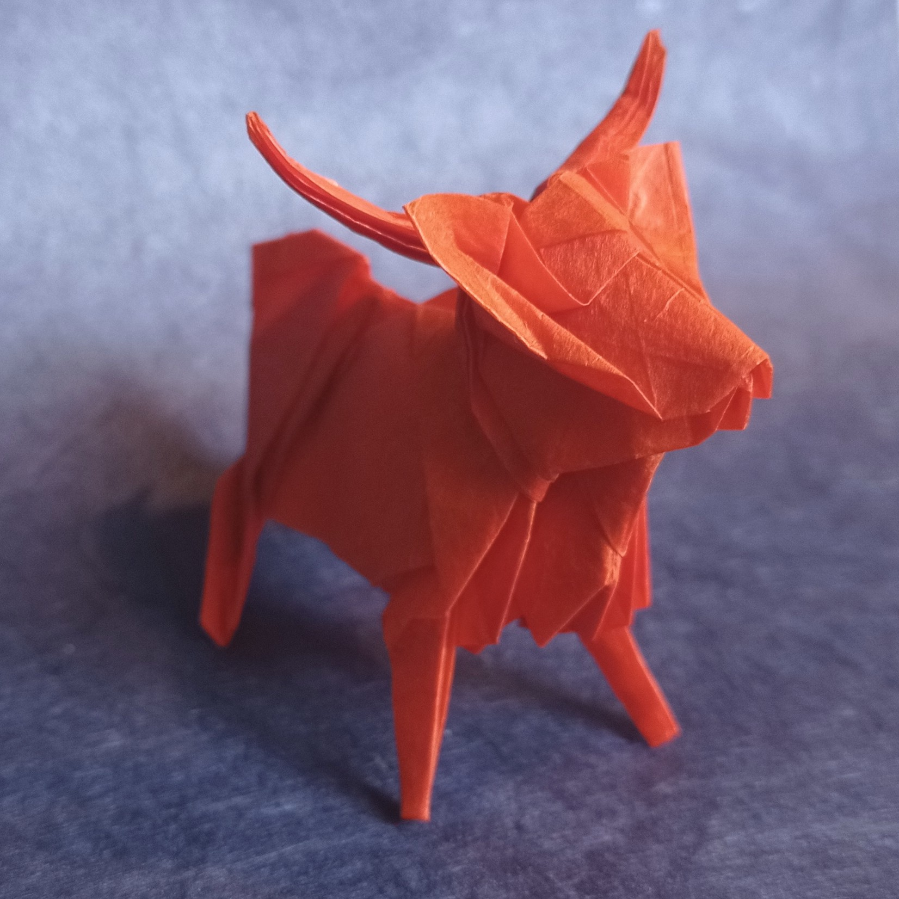
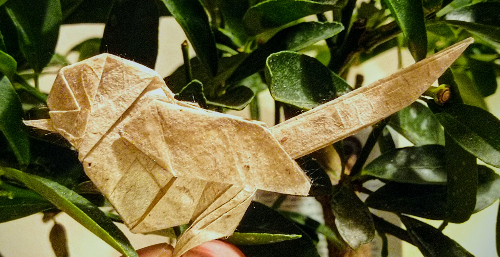
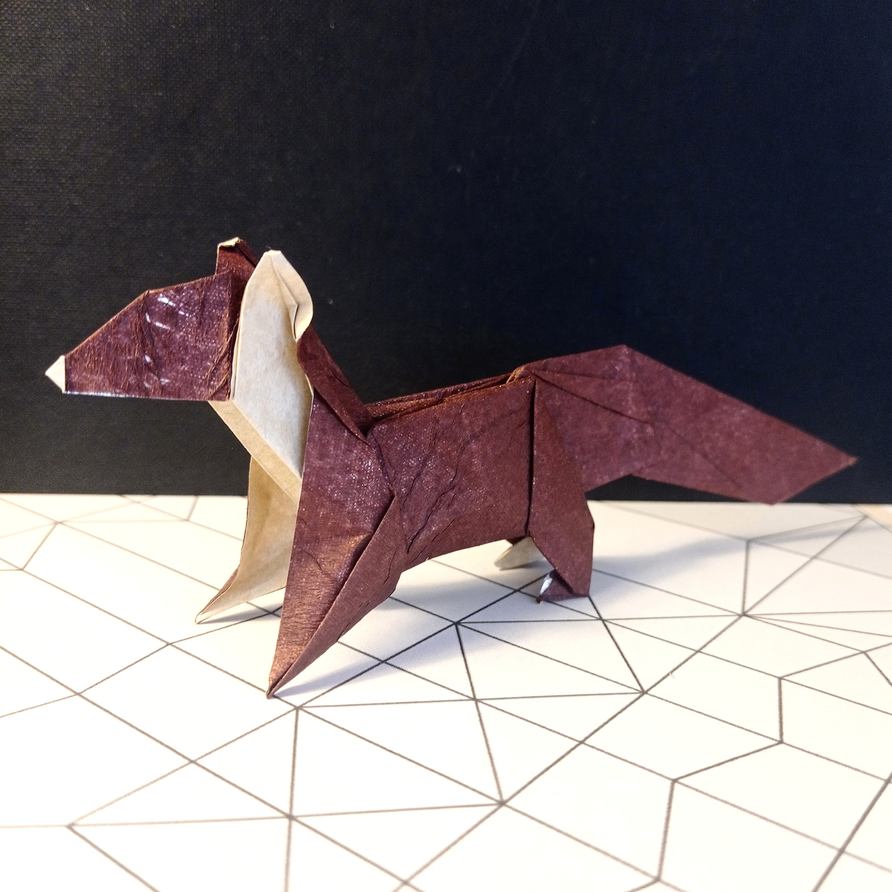
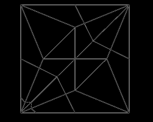

Heilan Coo (Scottish Highland Cow)
I designed this in late 2022 but it took me nearly a year to fully diagram it. It marks more or less one years worth of learning in designing and documenting, I'm really pleased with how well I've improved in both aspects.
Difficulty: Complex
Paper recommendation: 20cm single colour
Crease Pattern{kind=link}
Diagrams

Gold Crest
I originally designed this as a goldcrest but later reworked the details of the model to refine the shape and make a more adaptable "garden bird". Although the new changes havent been diagrammed yet, the underlying model is mostly unchanged.
Difficulty: Intermediate
Paper recommendation: 20cm dual colour
Crease Pattern{kind=link}
Diagrams

Pine Marten
The most important aspect I was considering when designing this was to include the colour change on the bib of the pine marten. Like finger prints, the shape of the bib is unique to each individual and this can also be achieved in the model with the excess paper in that area.
Difficulty: Intermediate
Paper recommendation: 15cm dual colour
Crease Pattern{kind=link}
Diagrams

Soaring Vulture
My first proper design. It has many flaws and short comings and there are mistakes in the diagrams..but a first design is surely going to include all these.
Difficulty: Easy
Paper recommendation: 15cm single colour
Crease Pattern{kind=link}
Diagrams